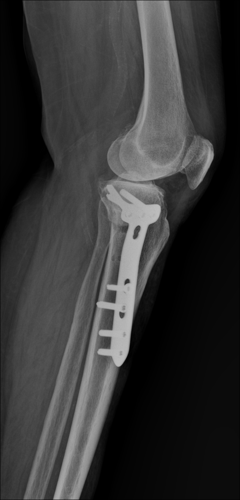

About US

Brief
Pioneers Of Health
Delivering Diagnostic Services to Your Doorstep in Egypt
Pioneers of Health is a leading provider of mobile radiology services(radiological and cardiological exams) in Egypt founded in 2019 by Radiologists and Cardiologists Consultant, offering convenient and high-quality diagnostic imaging directly at your home or any suitable location.
Our commitment is to deliver exceptional patient diagnostic imaging with cutting-edge technology and care to especially elderly people and people with special needs, surgical follow-ups, and sudden fractures. All done by a team of highly qualified medical professionals.
We offer a convenient and comfortable alternative to traditional hospital radiology departments by bringing the latest X-ray, ultrasound, and other imaging technology directly to your home, workplace, or other designated location. We use the best portable facilities with efficiency in acquiring high quality images taking radiological precautions and rapid delivery of reports.
We believe in our mission to serve all patients and doctors when and where they need us.
-
Vision
We understand that visiting a radiology center can be inconvenient, especially for elders , people with special needs, or those recovering from surgery.
That's why Pioneers of Health brings the radiology suite directly To revolutionize healthcare access by making high-quality radiology services readily available at any location, empowering medical service providers to make individuals prioritize their health with ease and convenience.
-
Mission
We are dedicated to:
Delivering Exceptional Care: Providing patients with the most advanced mobile radiology technology and a team of highly-trained professionals for accurate and reliable diagnoses.
Enhance Comfort and Security: Offering a personalized experience that caters to individual needs, ensuring a comfortable and safe environment in the patient's preferred location.
Promoting Accessibility: Removing the barriers of traditional radiology by eliminating the need for travel and long wait times, making diagnostic imaging accessible to everyone, regardless of mobility limitations.
Empowering Better Health: Equipping patients with the information they need to make informed healthcare decisions by providing timely and clear results and fostering open communication.
Portable Radiology Examinations Breakdown
One of the most important medical services for ensuring our health and safety is "Radiological Examinations" .
Evolution of Radiology Services
In the early days of radiology, it was limited to hospitals with a limited number of devices, with a public service that was difficult to allocate to each individual.
Over time, specialized centers emerged to provide patients with radiological examinations with better quality and comfort than before, but with incomplete solutions and a form that does not suit all times.
Pioneers: A New Era of Radiology
With the continuous development of technology and science, which always aims to improve the quality of life for individuals, radiology has entered an advanced stage, and has appeared in a new form whose first goal is user comfort. A pioneer in its new form is Bayoneer, a developed place specialized in the field of radiology.
We have chosen to contribute to improving the quality of your health, and we will reach you anywhere; To help you reassure yourself through:
- Fast-moving devices of appropriate size.
- Providing a distinguished medical service with professionalism and high quality.
- Developing an advanced service that suits your needs and solves your problem.
- Providing the latest technological devices in the field of radiology.
- Ensuring that the service is more flexible and comfortable.
At Bayoneer, your comfort is a priority. We try in every way to achieve it and ensure you a perfect, smooth and hassle-free experience.
pioneers: Partnering with Medical Businesses
Bayoneer isn't just a patient-centric radiology service; we can also be a valuable partner for medical businesses looking to introduce or expand their radiology services. As a technical provider, we offer a range of solutions that can empower medical businesses to:
-
Increase Accessibility
Bayoneer's mobile and flexible radiology units can help medical businesses reach new patient populations in underserved areas or those with limited mobility. This allows them to expand their reach and cater to a wider range of patients.
-
Enhance Patient Experience
Our focus on comfort and efficiency translates to a more positive experience for patients of partnered medical businesses. Faster turnaround times, convenient on-site services, and a commitment to patient comfort all contribute to a more positive perception of the overall healthcare experience.
-
Improve Service Efficiency
Bayoneer's technology and expertise can help medical businesses streamline their radiology operations and reduce costs. Our mobile units eliminate the need for expensive in-house equipment and dedicated radiology space, while our streamlined processes can improve efficiency and potentially reduce overhead costs.
-
Stay Up-to-Date with Technology
By partnering with Bayoneer, medical businesses can ensure they have access to the latest and most advanced radiology equipment without the significant capital investment required for purchasing their own machines. This allows them to offer their patients the most up-to-date diagnostic tools available.
Partnering with Bayoneer allows medical businesses to focus on what they do best , providing excellent patient care , while we handle the technical aspects of radiology services.
Explore Our Sucsses Story
Explore Our Sucsses Story
Get Touch With Our Technical Leaders
Libero justo laoreet sit amet cursus sit amet dictum.

DR. Abdelrahman Gammel

DR. Ahmed Hagag

Specialist Mahmoud Gammal